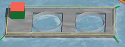

FISKERI OG OPPDRETT
- Et oljesøl som rammer fiskeriressurser vil utvilsomt få store konsekvenser for regionen og landet som blir rammet. Etter Prestige ulykken ble fiskeri- og oppdrettsnæringen i Galicia i Spania rammet. Først av et forbud mot å fiske, deretter av et forbud mot salg av oppdrettsprodukter i tiden etter ulykken. Fiskeriene var stengt i 4 måneder, og omsetningen av sjømat gikk drastisk ned.
- Voksen oppdrettsfisk er ikke spesielt sårbar for oljeforurensning, men fet fisk som laks kan ta opp oljekomponenter som vil føre til dårlig smak og misfarging på kjøttet.
- Fisken kan få skader av fluktforsøk.
- Og ikke minst har erfaringer vist at markedet for det ferdige produktet kan lide store tap etter et oljesøl.

Ref. Ren Kyst! WWFs frivillige oljevern.Kurskompendium. WWF, Jensen, N m.fl., 2006